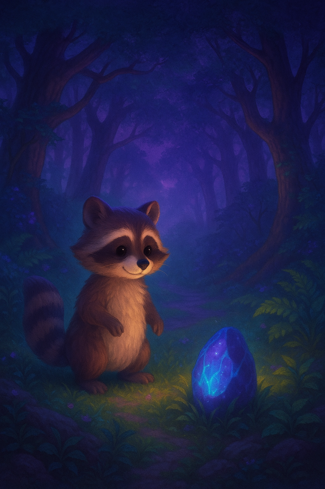

Чарівна казка
Одного разу
в чарівному лісі
жив собі маленький єнот
на імя Макс
він мріяв знайти
чарівний камінь
який світиться в темряві
Макс вирушив у подорож
зустрічаючи на шляху нових друзів.

Ваш браузер не підтримує аудіо.